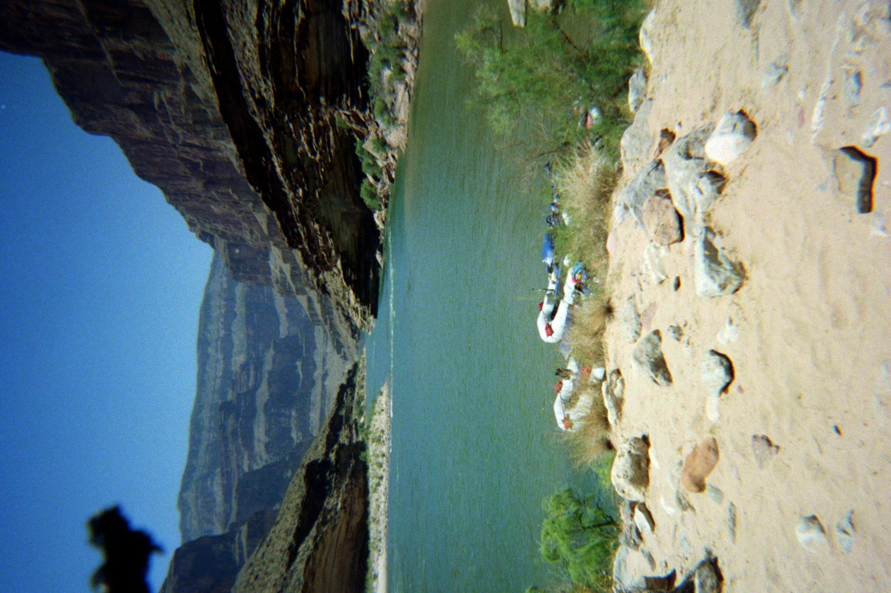
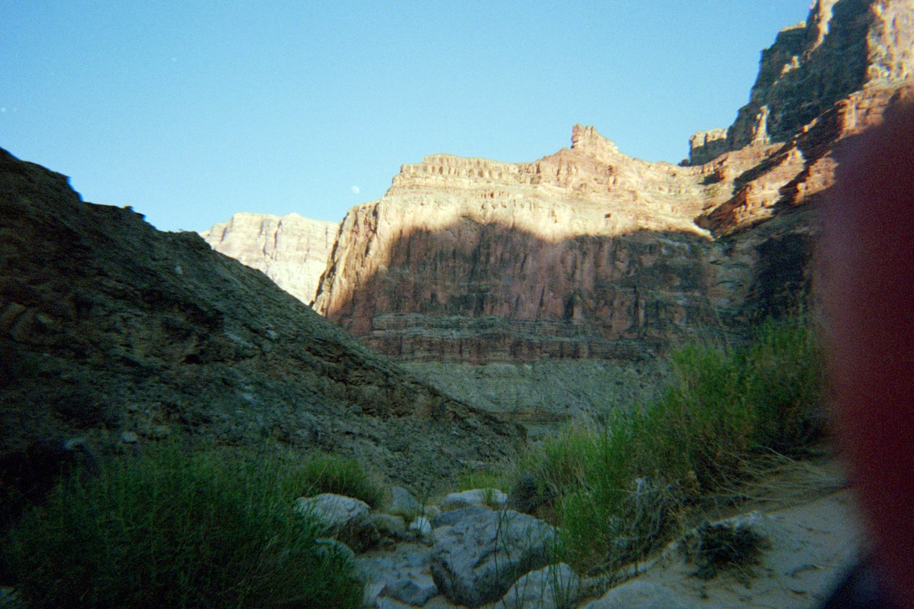
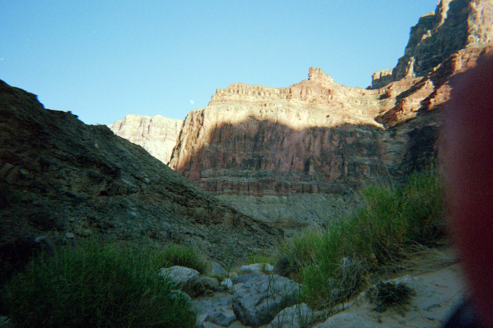

Grand Canyon Expedition

“The Grand Canyon, her majesty with walls red like a cape and glistening water she wears as jewels helped me to remember to honor the earth as the royalty she is and helped remind me why I do what I do.”
This Trip was nothing short of amazing. It was a back-to-back travel experience for me, as I landed in the Las Vegas airport at midnight, after 24 hours of travel from Townsville, Australia. I met my mom in the hotel lobby, of course she stayed up to greet me, and we stayed up a lot longer than we should have discussing my trip.

In the whirlwind of travelling and feeling like I’d somehow manifested to Las Vegas, I wasn’t exactly looking forward to this trip at the start. I was worried about being completely absent (no cell signal in the Canyon) for a week, as I was TAing for an online class at the time and also just being away from the Lab if anything was needed of me. However, after the pre-trip departure meeting, I began to get excited. Our trip consisted of 28 people in total, in two large inflatable motorized rafts. Conveniently, all 28 people were from my hometown, and one of my longest friends was also going on the trip. So, seeing lots of familiar faces and hearing about the fun that we are soon to have helped to shake off the anxiety of being away.
After a 5am extremely nauseating bus ride (don’t ask, you don’t want to know), we were dropped off at Lee’s Ferry, where we were all to help load the boats with our personal gear as well as the supplies that we’ll all be using for the week, including a mind-boggling amount of beer (more on this later). We were met at Lee’s Ferry by my Uncle Denny and Aunt Karen, whom I haven’t seen in quite some time, but live out in Mesquite, NV. It was awesome to see them and catch up before we pushed off of the boat launch area. Also, at the water’s edge was a horse who’d come up for a drink of the cool river water. We don’t think it was wild, as it looked too well taken care of, but was a cool sight to see, and was definitely my dad’s way of saying goodbye and good luck to us before we floated down the river.
The first day of the trip was a bit rough, for me and for mom too. I had no doubts that I’d be fine with the living and sleeping conditions of the trip (cowboy camping under the stars sounded lovely to me) but was worried about my jetlag and how long it would take me to adjust to the drastic time change. I’d seen my boyfriend Ben be taken down by a weeks worth of jetlag from just an 8 hour time difference in Saudi, let alone the 18 hour difference I was facing. I kept falling asleep in the boat and was woken up abruptly to the chilly 45 degree water, and my mom was increasingly poking me and (in a way that only mothers could do) reminding me, not very gently, that if I were to beat the jetlag I have to force myself to stay awake. Once we got off the boat for our first camp of the trip, I perked up again, with the exciting opportunity to pick our camp and set up, and also to help unload the boats. This is where things got rough for mom. She is not much of an outdoorswoman, I have never in my 24 years of life taken a camping trip with her, and all of the skills I learned have come from my friends, boyfriend, and the backpacking class I took at IU (yes, really). She was pitching a fit (without pitching her own cot I might add) about these accommodations, to which I replied we are very lucky we have a cot to sleep on, people cooking all of our meals, and are most certainly not roughing it out here in the wilderness. Like the good daughter I am, I set up her bed for her and our little living arrangements. We shared an alcove of sand with my childhood friend Addison, his girlfriend, Mercedes, sister, Aly, and other friend, Austin (all of whom I was also friends with) and his mom, which was very cute. After this first night, and a bit of a wakeup call from myself I might add, mom got on much better with the camping, and my jetlag disappeared after the first night of 10 hours of sleep.
 
The next few days tended to blend together, as red rocks transitioned from the Marble Canyon to the Grand Canyon Proper, we explored incredible hikes and sites along the side of the river, learned about the geology of the Grand Canyon and greater American Southwest. We also got many history lessons regarding the American presence in the Canyon, from the wild west up to present day. I was a bit disappointed in the relative lack of indigenous presence in many of the stories our guide told of the history of the Canyon. It was painted in the old and wore-out frame that these “native savages” were civilized by westward expansion and colonization, which was unpleasant to hear at best and racist and uninformed at worst. However, despite this, we still had a good time, and it seemed our other guide and swampers didn’t share this ideology.
One thing that I didn’t mention, and that I think is rather funny and telling of my small Indiana town, is that we had brought the most alcohol that our crew had ever seen for a trip! Enough that we were delayed by a half hour upon our original departure because the captains had to rearrange the boats to fit all of the beer, seltzers, and liquor we had brought. Before the trip had even started, Jeff, the organizer of the trip, had advised us to buy “double of what you are currently thinking you will drink on the trip.” Mom and I had thought “no way, it will be 110 degrees in the Canyon, I definitely don’t want to drink all day, that’ll be miserable” but alas, not wanting to be left out, we bought the recommended amount and I’m glad that we did, because I’ll be dammed if we didn’t drink every single can.  No longer was the crew worried about the space and weight of the beer, now they were worried about the space of the empty cans! After an evening talking with our crew, we asked them what they had thought about the amount of alcohol we’d brought. They had said that they thought for sure they would have to cut the trip short, because we would be too drunk and unruley, and wouldn’t listen to directions or would become a safety hazard. They said that they thought it was because we all knew each other, that we didn’t have a problem with calling out one another if someone was getting too drunk, or hadn’t drank enough water, which I thought was cool. Our little community of people from nowhere Syracuse, Indiana. It was awesome to bond with our captains and swampers, they were all wonderful people, and I am grateful for the opportunity to listen to their wisdom of this unique ecosystem they call home.
No longer was the crew worried about the space and weight of the beer, now they were worried about the space of the empty cans! After an evening talking with our crew, we asked them what they had thought about the amount of alcohol we’d brought. They had said that they thought for sure they would have to cut the trip short, because we would be too drunk and unruley, and wouldn’t listen to directions or would become a safety hazard. They said that they thought it was because we all knew each other, that we didn’t have a problem with calling out one another if someone was getting too drunk, or hadn’t drank enough water, which I thought was cool. Our little community of people from nowhere Syracuse, Indiana. It was awesome to bond with our captains and swampers, they were all wonderful people, and I am grateful for the opportunity to listen to their wisdom of this unique ecosystem they call home.
Ultimately, the trip came to an end, and I had found myself very sad to leave. From being stressed about taking off more time from school, to wanting to stay on the river for another week, this trip was so lovely, it bonded our group in a way that will stick with all of us forever, and I also was really happy to see people become one with nature while on this trip. I think that it’s easy to slip into this ecological disconnect, that human and nature are two separate entities, when in reality as an ecologist I know that’s not true. To be immersed in one of the seven natural wonders of the world, looking and touching the millennial old rock, I couldn’t help but feeling this intense respect for all of the life that came before me, and everything that is yet to come. It was with a deep gratitude that I thank the Grand Canyon for grounding me to that place and time, so I may remember the work that needs to be done to conserve these fragile ecosystems we call home.
Image Gallery and map of our 8 day expedition down all 277 miles of the Colorado River:


.jpg)

 

Images were taken on my iPhone, my 35mm film camera, and my friend Addisons Canon EOS